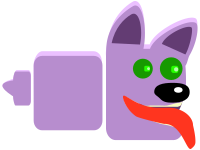

Under animationstemaet skulle vi lave et spil. Formålet med spillet var, at blive introduceret og lære basis javascript, som vil kunne overføres til når vi laver hjemmesider. Vi blev introduceret til aktivitetsdiagram, som bruges til at visualisere userflows og state-machinediagram, som bruges til at visualisere hvordan JavaScripten skal skrives.
Jeg startede op med at sketche i hånden, og gik derefter videre til at sketche i illustrator.
Da jeg havde en ide om hvordan jeg ville have mine assets, gik jeg videre til at tænke mere i former og karaktertræk.
Jeg gik ud fra arketyper, og derfor har min helt runde former som gør ham elskelig, skurken har trekantet former, som gør ham spids og farlig og min sidekick har firkantede former, som gør ham fast som en klippe.
ANIMATION

RUMBLE IN THE JUNGLE
Under animationstemaet skulle vi lave et spil. Formålet med spillet var, at blive introduceret og lære basis javascript, som vil kunne overføres til når vi laver hjemmesider. Vi blev introduceret til aktivitetsdiagram, som bruges til at visualisere userflows og state-machinediagram, som bruges til at visualisere hvordan JavaScripten skal skrives.
Jeg startede op med at sketche i hånden, og gik derefter videre til at sketche i illustrator.
Da jeg havde en ide om hvordan jeg ville have mine assets, gik jeg videre til at tænke mere i former og karaktertræk.
Jeg gik ud fra arketyper, og derfor har min helt runde former som gør ham elskelig, skurken har trekantet former, som gør ham spids og farlig og min sidekick har firkantede former, som gør ham fast som en klippe.
RUMBLE IN THE JUNGLE
Derefter gik jeg over til at finde ud af hvilken farvepalette mit spil skulle have. Det blev til en klar komplementær harmoni og monokrom harmoni. Min helt er blå og gul, da blå og gul sammen symboliserer sikkerhed, og skurken er selvfølgelig rød, da de som regel har røde farver. Den røde farve spænder vidt i symbolik, fra kærlighed til vrede, og den tiltrækker let vores opmærksomhed, som skurke også gør. Som det sidste led i designet, skulle jeg vælge typografi. Det blev til Cora (BOLD). Den er valgt specifikt på grund af j’et, som jeg synes minder mig om Junglebogen og junglestemning. Derudover har jeg tyknet og rundet fonten en smule, så den harmonerer med figurerne og designet. Mit spil blev desværre ikke færdigt, men jeg føler jeg tillærte mig de kompetencer der var nødvendige for at kunne kode gruppeanimationsspillet.
GRUPPEANIMATION
I temaet grundlæggende animation, fik vi til opgave at lave to spil - ét individuel og et gruppespil. Her ser vi gruppespillet, som skulle laves som var den en del af en kampagne fra Sex og Samfund under emnet billeddeling.
Spillet skulle her, som noget nyt fra det individuelle spil, brugertestes så vi ville være sikre på at få et produkt der passede til målgruppen. Vi lavede semi-struktureret interview af en teenager og lavede spørgeskema til deltagerne under testdagen. Spørgeskemaet blev brugt til at spore os ind på, om der var nogle huller i design, forståelse og læring af spillet.
Interviewet af teenageren blev lavet i starten af processen, for at spore os ind på et designvalg, der kunne henvende sig til målgruppen, som var folkeskoleelever i alderen 13-15 år.
Vi blev introduceret til trello, scrum og burn-down-chart, som er arbejdsværktøjer til strukturering. Det gav et godt overblik over alt der skulle nås på forskellige dage og for hele processen generelt.
Vi lavede inden vi kodede spillet et aktivitetsdiagram, for at sikre os at vi kendte userflowet. Vi lavede også et statemachine-diagram, da dette er et godt redskab til at strukturere javascriptkodningen.
Se spil
HVAD MÅ DU DELE?
Vores spil har til formål at oplyse omkring billeder, der ikke må deles.
Vi har bygget vores spil op som en quiz, hvor man skal svare på, hvilke billeder, der er passende at dele online.
Spillet hedder “HVAD MÅ DU DELE?” og foregår i pigernes omklædningsrum efter idræt.
Der falder iPhones ned fra oven, som du skal trykke på (dette giver 1 point). Ved nogle mobiler vil der dukke et dilemma op (der findes 9 i alt) - her skal du vurdere, hvorvidt det er upassende at dele eller ej, hvilket du har 4 sekunder til. Når du ikke at svare på spørgsmålet, mister du 1 point. Svarer du rigtigt, får du 1 point, svarer du forkert mister du 5 point.
Du skal have over 20 point for at gennemføre spillet - spillet er på tid, så når du ikke dette inden tiden er løbet ud, har du tabt.

HVAD MÅ DU DELE?
Vores spil er målrettet teenagere i aldersgruppen 13-15 år, der er kommet i puberteten og så småt begynder at udforske sin egen og eventuelle partners seksualitet.
Det er en alder, hvor der sker meget rent udviklings- og følelsesmæssigt og hvor man har følelsen af at have et ben i hver lejr - overgangen fra barn til voksen.
Vores illustrationer passer godt til målgruppen, fordi målgruppen for det første er begyndt at beslæftige sig med deres og andres kroppe og seksualitet, og samtidig ved vi fra vores test af teenager, at billedmaterialet læner sig op af at være udfordrende, da billederne med krops og kønsdele tager den lige til grænsen.
DESIGN
Vi har i vores spildesign taget udgangspunkt i den minimalistiske flatdesign.
Den er relaterbar til målgruppen, da de bliver mødt med flatdesign hele tiden gennem de apps de bruger. Kompositorisk har vi arbejdet med stærke linjer og atmosfærisk perspektiv.
Vi har i vores design gjort brug af nedtonede og ‘støvede’ farver samt enkelte stærke nuancer, for at tilføre kontrast og skabe blikfang. I baggrundsdesigner har vi overvejende gjort brug af af kliniske og kolde farver, som findes i omklædningsrum.
For at skabe en sammenhæng med privat snak, har vi tilføjet sort og orange til vores farvepalette, men tonet dem en smule ned, så de ikke skriger for meget. Vi gør brug af flere farveharmonier som monokromatisk og komplementær.
TYPOGRAFI
Vi har gjort brug af fonten Futura, som er valgt på baggrund af flere ting.
Først og fremmest er de fleste lave, lowercase bogstaver helt runde i deres form, hvilket giver en god kontrast til vores meget firkantede spilskærm, men samtidig komplimenterer de bløde karakterer og illustrationer der er i spillet.
De lange, lowercase bogstaver er stringente og de opadgående streger hårde og lange, hvilket komplimenterer de stramme linjer i spilbaggrunden.